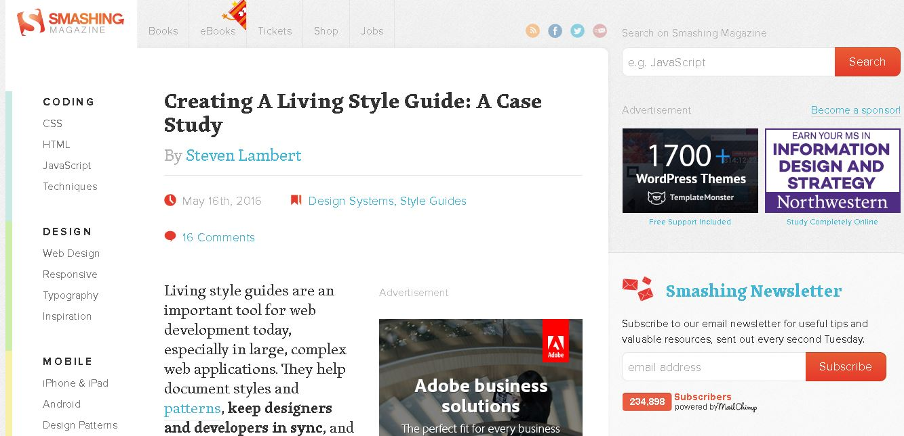

HIT226 Prep for Unit Activity
Home
Tips
Components
Typography
Colour Palette
Helpful Links
References
aFew Useful Websites are.......

Creating a Living Style Guide: A Case Study, 2016
Article written by Steven Lambert for Smash magazine